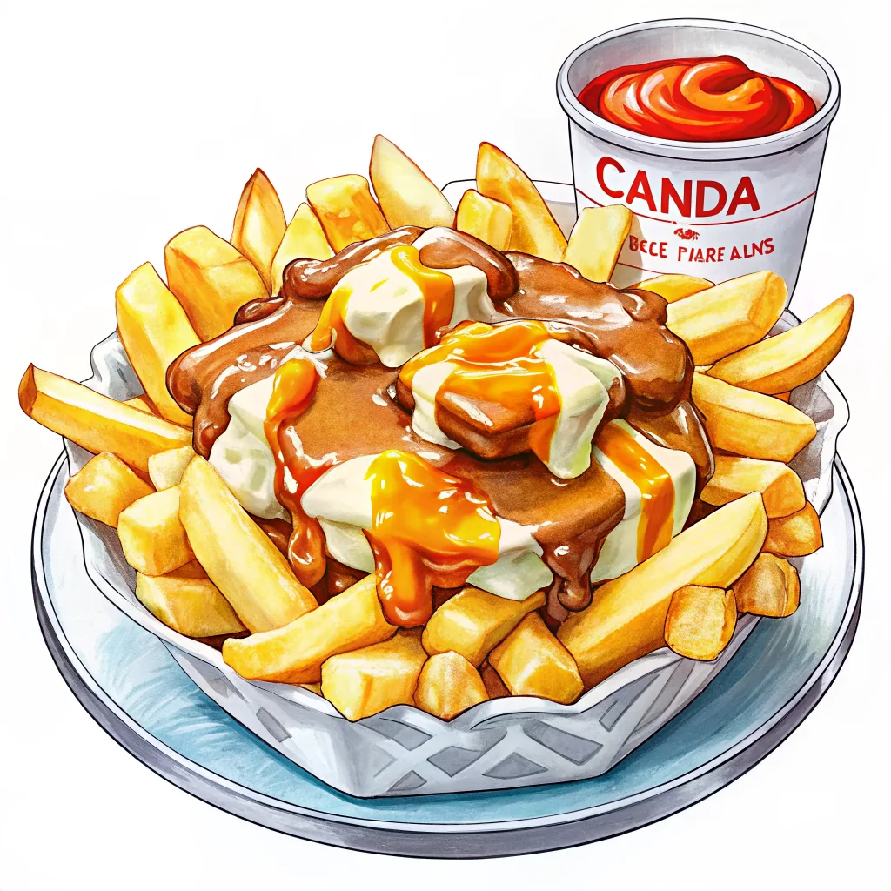

壮大な自然とオーロラ、多文化な都市観光が魅力で根強い人気を誇る。ワーキングホリデー渡航先の定番でもあり、語学留学先としても選ばれることが多く、治安の良さから初めての海外長期滞在先としても人気が高い。
国土が広く、地域によって気候が大きく異なる。都市部（トロント・モントリオール・バンクーバー等）の観光ベストシーズンは6〜9月の夏で、紅葉狙いなら9〜10月も人気。カナディアンロッキーは夏がハイシーズン、オーロラ狙いなら乾燥して空気が澄む12〜3月の冬がベスト。
ベスト：6〜9月（夏）／ 9〜10月は紅葉も美しい
ベスト：6〜9月（夏）／ 冬は氷点下10°C台まで冷え込む
ベスト：6〜9月（夏）／ 冬は温暖だが雨が多い
ベスト：6〜9月（ハイキング）／ 12〜3月はスキーシーズン
ベスト：12〜3月（オーロラ）／ 6〜8月は白夜に近い短い夏
モントリオール・ケベックシティ・イエローナイフなどの冬は氷点下10〜20°C台まで冷え込むことも珍しくない。都市部でもダウンジャケット・防寒ブーツ・手袋は必携。バンクーバーは比較的温暖だが雨が多いので折りたたみ傘があると安心。
赤白赤の三分割に、中央へ11本の突起を持つ赤いメープルリーフをあしらった国旗。1965年制定
人気の観光地から穴場まで、実際に行って良かった場所を厳選してまとめました。